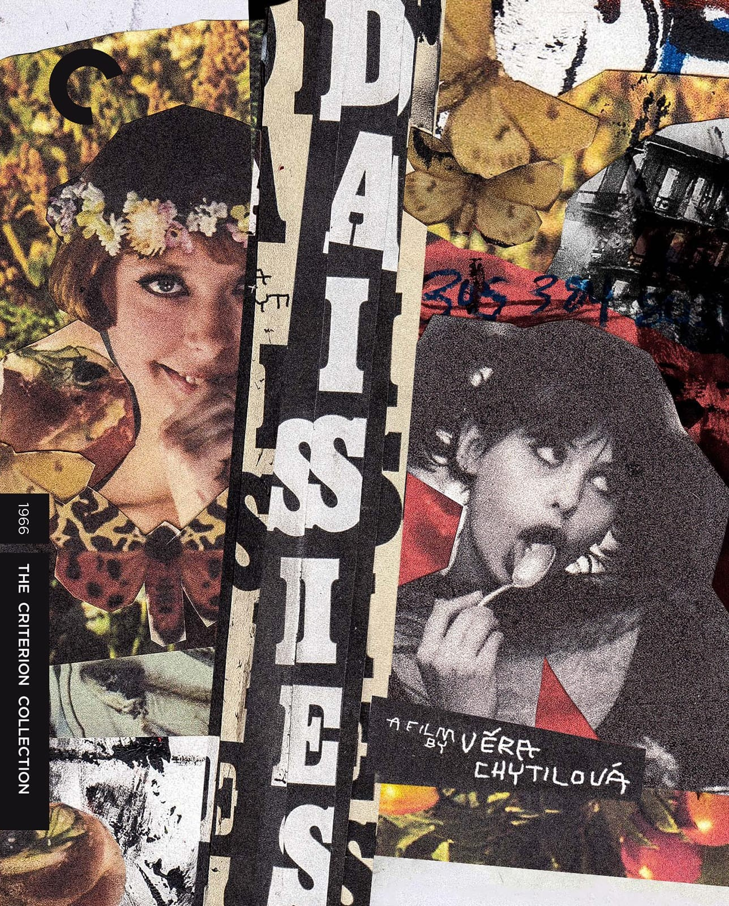

Listen On
Two young women, both named Marie, decide that since the whole world has gone bad, they will go bad too. They drift through Prague on a spree of pranks, appetites, and gleeful destruction, devouring banquets, cutting up the world around them, and tormenting every man who tries to buy their company. Co-written with Ester Krumbachová and shot by Jaroslav Kučera in a riot of tinted color, Věra Chytilová's Czech New Wave landmark was banned in Czechoslovakia and denounced for wasting food. More than half a century later, Daisies remains a dazzling, still-dangerous piece of slapstick cinema.
Maggie Hennefeld is a professor of Cultural Studies and Comparative Literature at the University of Minnesota, where her research focuses on comedy and laughter, silent and early cinema, and feminist film theory. She is the author of Death by Laughter: Female Hysteria and Early Cinema and Specters of Slapstick and Silent Film Comediennes, and co-editor of Unwatchable and Abjection Incorporated.
Spoiler-free context and starting points.